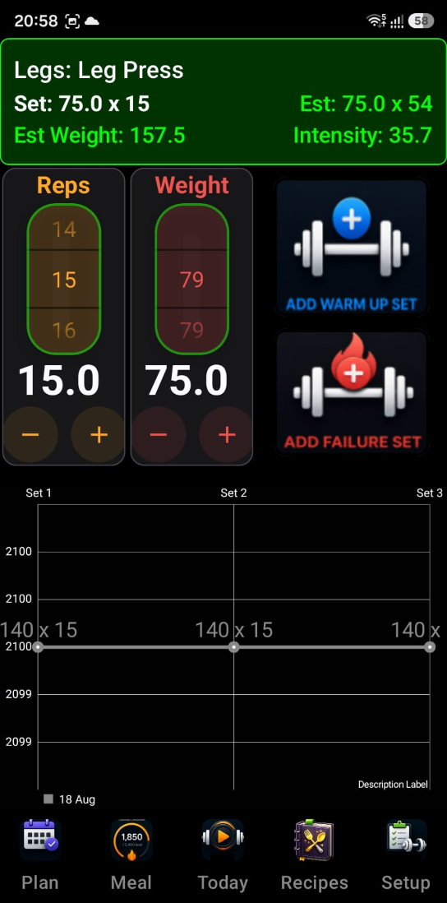

Your live logging cockpit for during-workout tracking.
The Track Widget is the core logging interface of the IronSet
app, designed for use during your workout. It provides a
real-time view of your performance, easy-to-use logging
controls, and instant visual feedback. Here is a detailed
breakdown of its interface and functionality.
1 The Active Workout Card
(Top)
This card serves as your immediate target reference. It
displays:
Current Exercise — The
specific movement you are currently tracking.
Target vs. Estimate —
It shows your current planned set (e.g., 60kg × 8)
side-by-side with an "Est" (Estimate). The estimate
tells you what you should be capable of based on your
historical strength, helping you decide if you can push
for more reps.
Live Metrics:
Performance —
A real-time score of how well you are performing
compared to your historical best.
Fatigue — A
calculation of how much your strength is
dropping as you progress through your sets.
Intensity Warning — It
calculates your training intensity. If you are training
too heavy (high intensity) or too light, the widget
displays a color-coded warning (e.g., "Avoid high
intensity") to help you stay within your optimal
training zone.
Barbell Bench Press60kg × 8
· Est 65kg × 8
Performance
104%
Fatigue
18%
⚠️ Avoid high intensity — approaching your ceiling
2 Quick Logging Controls
(Middle)
Designed for "gym-brain," the controls are large and
simple:
Reps & Weight Toggles
— Large input areas to quickly adjust the
numbers for the set you just finished.
Tilt-to-Adjust
— If enabled, you can actually tilt your phone
left or right to increase or decrease your rep
count — perfect for when your hands are sweaty
or you're wearing gloves.
The "Add Set" Buttons:
Easy/Normal SetGreen — A
large button to log a successful set.
Failure SetRed — A
dedicated button to log sets where you reached
muscle failure.
✓ Log Set
✕ Log Failure
Visual Confirmation: When
you log a set, a large 💪 overlay appears briefly on the
screen, giving you clear confirmation that your data was
saved without needing to squint at small text.
💪
Set logged
3 Real-Time Performance Chart
(Bottom)
The bottom half of the widget features a dynamic line chart
that visualizes your workout:
Today vs. History — It
plots your current sets (Blue line) against your
"Baseline" from your last session (Gray line). This
gives you an immediate visual of whether you are
"beating" your past self.
Volume Estimation — It
can show an "Est" (Red line) which predicts your total
volume for the session, letting you know if you're on
track for a Personal Record (PR).
Interactive Dots — You
can tap on the data points in the chart to see specific
details about that individual set.
TodayBaselineEst. (PR pace)
4 Hands-Free & Calibration
Tilt Calibration — The
widget is built to work with the app's Tilt Navigation
system, allowing you to scroll or interact with the
interface by moving your device.
Auto-Scroll — During
Autopilot mode, the widget automatically updates to show
the next recommended exercise, so you never have to
manually search for what's next.
🏋️ Track Widget — screen preview

In Summary
The Track Widget is your "Live Cockpit." It takes the
guesswork out of your session by showing you exactly what
you need to do to progress and giving you the easiest
possible way to log your results.